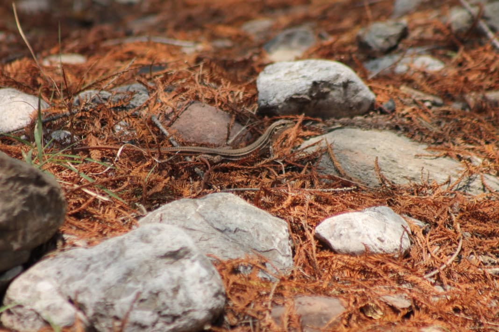
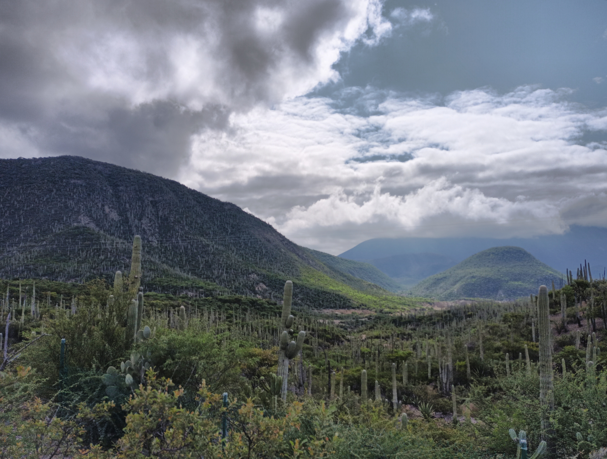
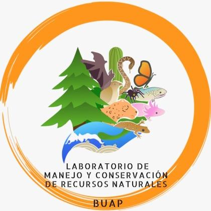
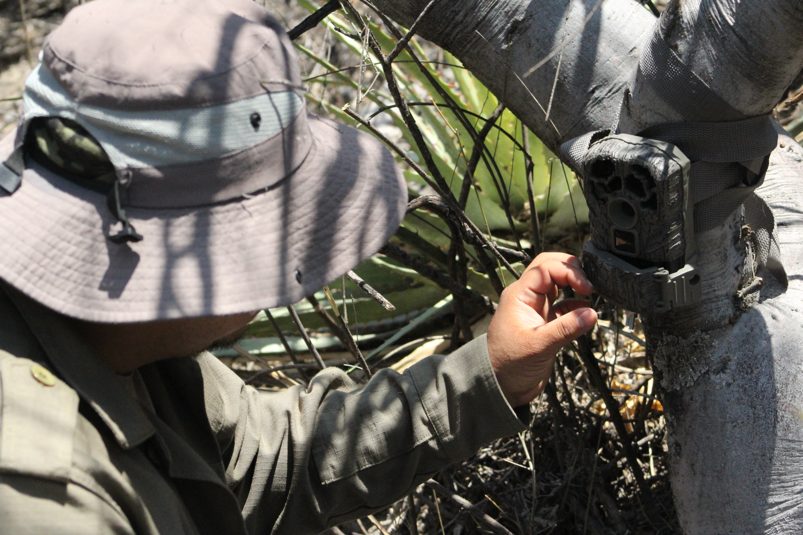

PATRIMONIO BIOCULTURAL
PATRIMONIO BIOCULTURAL
PATRIMONIO BIOCULTURAL
PATRIMONIO BIOCULTURAL

Documentación visual de los procesos de investigación, vinculación comunitaria y monitoreo biológico en el territorio.


Nuestra labor no se limita al análisis de gabinete; recorremos las cañadas, instalamos tecnología de punta para el monitoreo de fauna y establecemos diálogos circulares con las comunidades para validar el conocimiento biocultural.
Explora la documentación visual de nuestro proceso de investigación, desde el despliegue tecnológico en campo hasta el análisis científico de gabinete.



Descripción